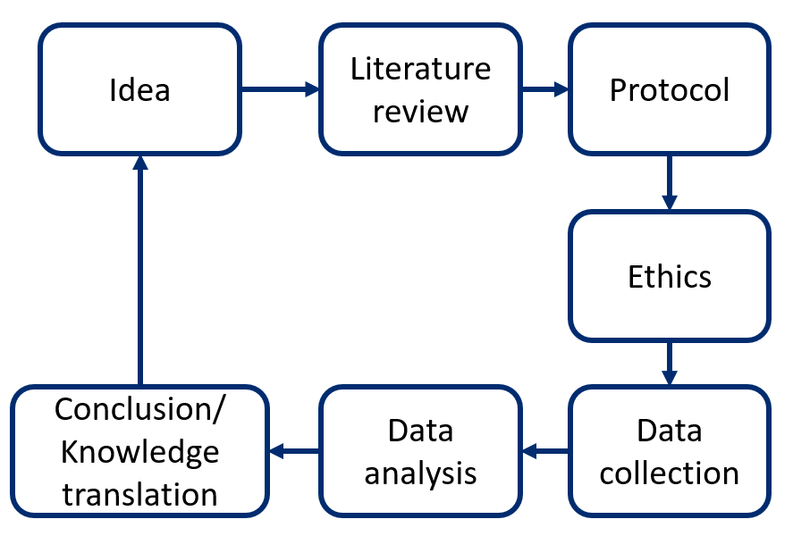

Research
What is science and research?
Science is a rigorous examination of the world around us. Science involves asking questions, making observations and evaluating the ideas that come out of observations. In other words, science aims to ask research questions and design studies that can answer these questions. Science is systematic, transparent, explicit and reproducible.
There are several definitions of research. Creswell (2002, p.3) suggests one that is simple to understand: research is a "process of steps used to collect and analyze information to increase our understanding of a topic or issue".
To learn more, check out our glossary of research terms (downloadable PDF).
The two types of research we often hear about are basic and applied research.
| Basic research | Applied research |
|---|---|
| Conducted to advance fundamental knowledge about the world. It is sometimes called laboratory or bench research | Focuses on analyzing and solving real-world problems (e.g., discovering how effective a specific medication is) |
Patient-oriented research
A patient is any individual that has a personal experience with a health problem, including caregivers. One of the main focuses of the Canadian Institutes for Health Research (CIHR) in the past few years is patient-oriented research.
Patient-oriented research:
- Is about engaging patients, their caregivers, and family as partners
- Targets the priorities identified by the patients and improve health outcomes
- Is led by multidisciplinary teams in partnership with different stakeholders
- Aims to apply the generated knowledge to improve health care systems and practices
General view of research steps
Like other research projects, a patient-oriented research project will include the research problem, needs (knowledge gaps), objectives, questions, and methods. The main steps are as follows:
- A literature review is conducted to uncover knowledge gaps. These knowledge gaps guide the research objectives and research questions.
- Before the project can begin, it must receive ethical approval from the appropriate institutional review board(s).
- Data is collected and analyzed using the appropriate research method (qualitative, quantitative or mixed methods) to produce results.
- These results are interpreted by, communicated to, or applied with, stakeholders in the knowledge translation phase.
 Literature review > Protocol > Ethics > Data collection > Data Analysis > Conclusion/Knowledge translation" width="50%" />
Above: General overview of research steps.
Thank you for helping us improve this section by completing a short survey.
Research ethics
Ethics constitute norms of conduct that distinguish and define behaviors that are acceptable, and those that are not. Different disciplines, professions and organizations have norms of conduct that correspond to their needs and objectives. Research ethics correspond to the principles and standards that prevent misconduct (e.g., fabrication, falsification or misrepresentation of research data) and protect the research participants.
Historical context
Research involving humans has been part of medicine for centuries. However, it was in the 19th century, that it truly emerged with the adoption of the experimental method in both science and medicine. By the beginning of the 20th century, the idea of conducting research involving humans was becoming more acceptable, although most studies were first conducted on animals. Unfortunately, research studies in bacteriology at the end of the 19th century and beginning of the 20th century across North America and Europe involved unethical practices. Although medical and scientific associations condemned these practices, this did not result in any professional, disciplinary or criminal charges. It was only following the Second World War and the Nuremberg trials that such charges were laid. The judges’ verdict in 1947 included a section entitled “Permissible Medical Experiments”, which described ten principles to be followed in conducting research on humans. Known today as the “Nuremberg Code”, it states as its first principle that “the voluntary consent of the human subject is essential”.
Canadian context
A key step to ensure the ethical acceptability of a research project is to have an independent review (i.e., review by someone other than the researchers involved in the study). The first Canadian requirement for an independent review of research protocols by a Research Ethics Board (REB) was in the 1978 Medical Research Council guidelines. In 1998, the Medical Research Council (now the Canadian Institutes of Health Research-CIHR) together with two other federal research councils, the Natural Sciences and Engineering Research Council (NSERC) and Social Sciences and Humanities Research Council (SSHRC), published a single set of guidelines: The Tri-Council Policy Statement: Ethical Conduct for Research Involving Humans (TCPS) for research involving humans regardless of the field of research.
The Tri-Council Policy Statement: Ethical Conduct for Research Involving Humans - TCPS 2 (2018) regulates research done on human beings in all scientific fields. This policy views the ethical principles as expressions of the overarching value of human dignity and a “compass” to providing necessary protections for research participants while serving legitimate needs of research.
Research Ethics Board (REB)
Given that researchers can no longer evaluate on their own the ethical acceptability of their research projects, this mandate is given to a Research ethics board (REB). An REB is responsible to annually evaluate and approve any research project involving human beings. REBs are usually composed of researchers, ethicists, lawyers and members of the public. The primary mandate of an institutional (e.g., university, hospital) REB is the protection, safety and well-being of all human participants involved in research conducted under the institution’s responsibility.
Thank you for helping us improve this section by completing a short survey.
References
Creswell JW. Educational research: Planning, conducting and evaluating quantitative and qualitative research. Upper Saddle River, NJ: Prentice Hall; 2002.
Additional resources
-
Glossary of Terms Used in Research: a glossary developed by the Methodological Development Component providing definitions for terms which frequently occur in discussion of research methods.
-
Jargon Buster for Research Terms: a glossary developed by the CIHR providing lay language definitions for frequently used health research terms.
-
The National Collaborating Centre for Methods and Tools (NCCMT): videos about key concepts related to research evidence and evidence-informed public health from one of six National Collaborating Centers for Public Health in Canada.
-
Research4Life Training Portal: a platform with free downloadable resources for researchers. The Authorship Skills section contains 10 modules, including how to read and write scientific papers, intellectual property and web bibliography along with hands-on activity workbooks.
-
Ethics Resources: a resource list from Health Canada and the Public Health Agency of Canada's (PHAC) Research Ethics Board